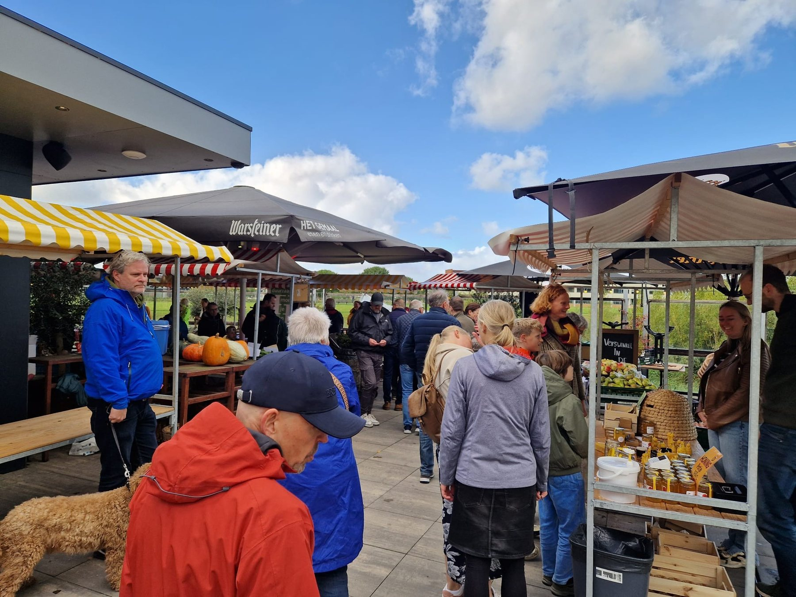
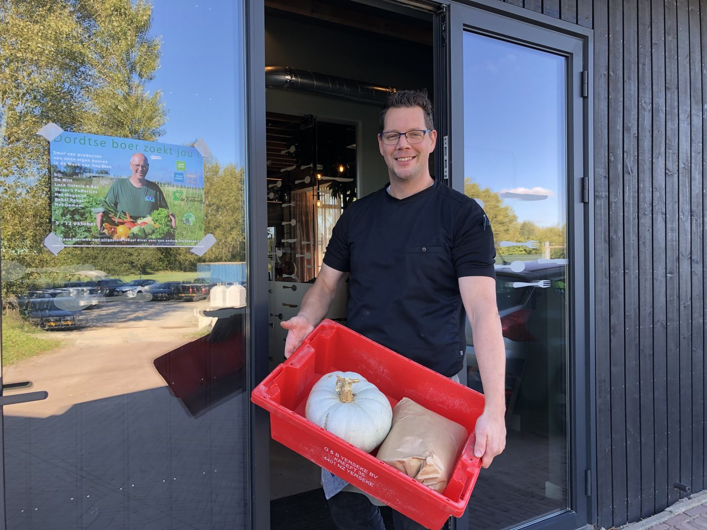
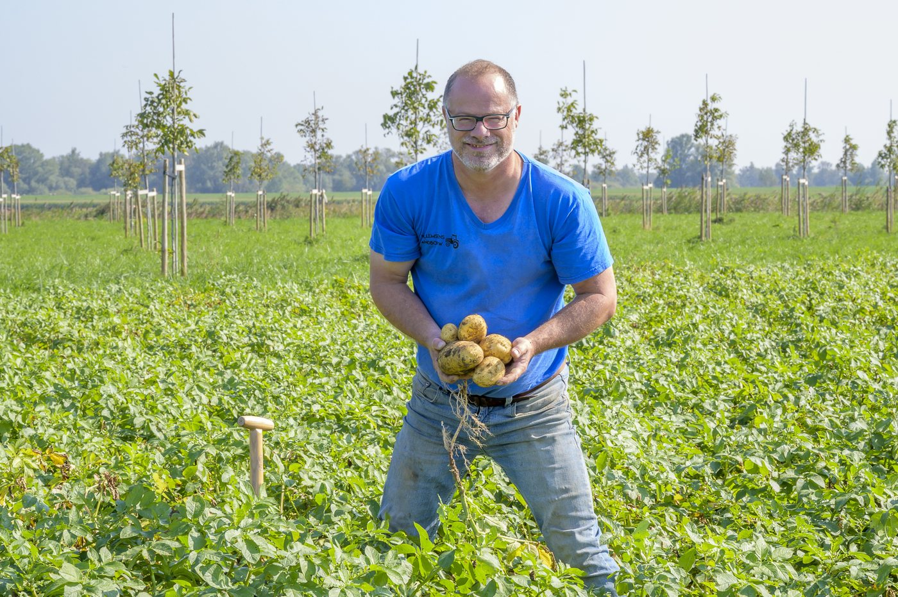
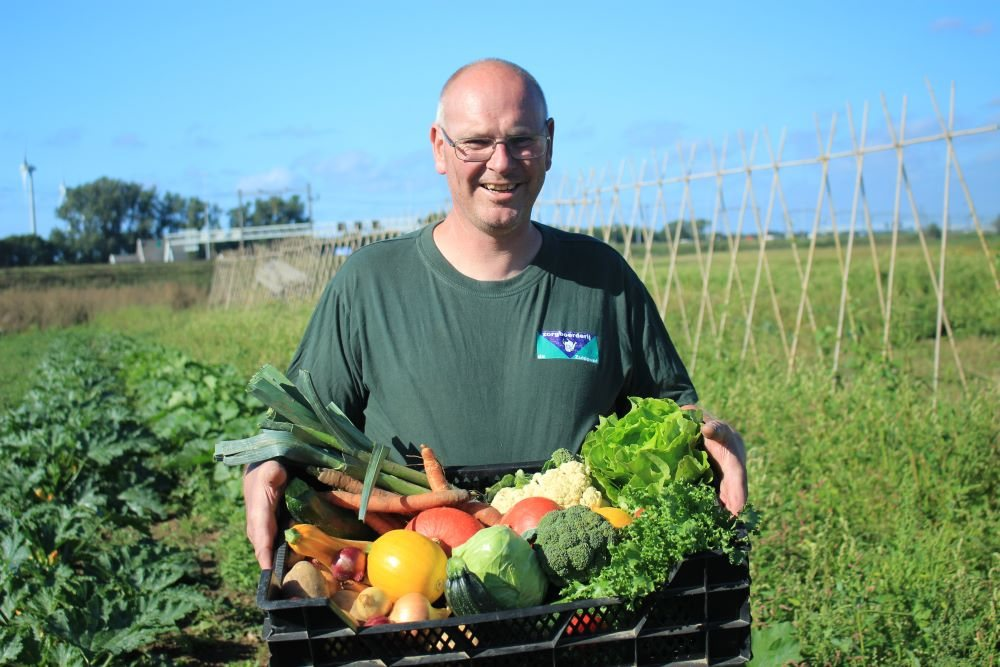
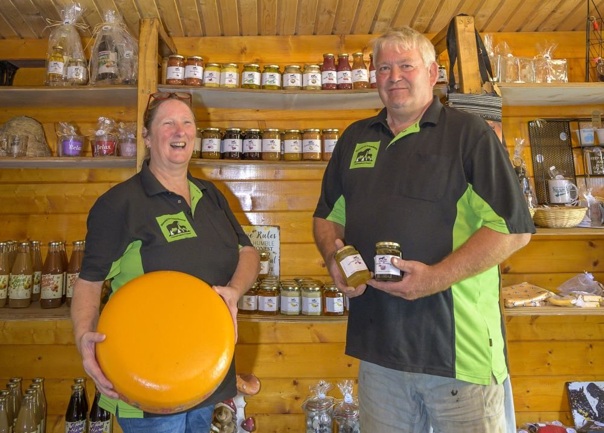

30 mei bij Het Gemaal
Boerenstreekmarkt Dordrecht
Verse producten, rechtstreeks van het land. Kom tussen 10.00 en 16.00 uur proeven en kopen bij restaurant Het Gemaal.
Boerenstreekmarkt
Samen met boeren en makers uit Dordrecht en de regio en de lokale horeca zetten we de schijnwerpers op onze lokale en regionale producten. Dat doen we op 30 mei tijdens de Boerenstreekmarkt bij restaurant Het Gemaal aan de Loswalweg 6 in Stadspolders.
Kom tussen 10.00 en 16.00 uur van alles proeven en kopen, van groenten, wijn en honing tot kaas, thee en jam.
Ontdek streekproducten van boeren, winkels en makers uit Dordrecht en omgeving.
Studenten van ROC Da Vinci College koken met koks Alex Verburg en Jeroen Molenaar.
Kom vooral op de fiets, of parkeer bij het winkelcentrum en loop via de Vissersdijk.

Locatie
De Boerenstreekmarkt vindt plaats bij restaurant Het Gemaal aan de Loswalweg 6 in Stadspolders.
Deelnemers

In het buitengebied van het Eiland van Dordrecht en de regio werken boeren en makers aan ons dagelijks eten. Op enkele erven kun je ook direct van de boer producten kopen. Dit keer komen ze naar jou toe en kun je met hen in gesprek.

De Boerenstreekmarkt wordt georganiseerd door studenten van ROC Da Vinci College, restaurant Het Gemaal en de werkgroep Voedsel van Dichtbij Dordrecht. De werkgroep zet zich in voor meer gezond en betaalbaar voedsel van dichtbij op het bord bij Dordtenaren.

Boeren, winkels en makers brengen hun producten samen op een plek, zodat bezoekers kunnen proeven, kopen en kennismaken met voedsel uit de buurt.